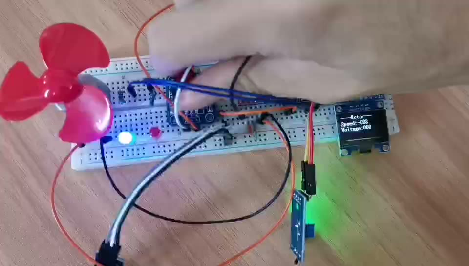
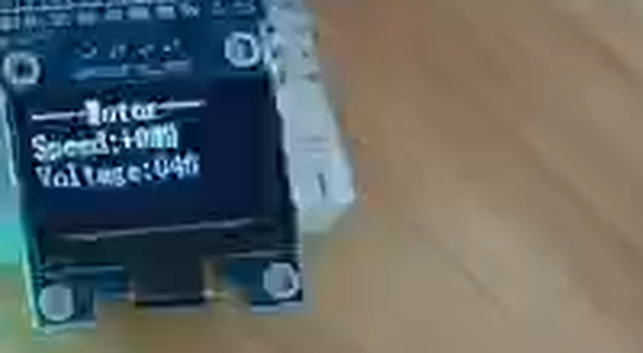
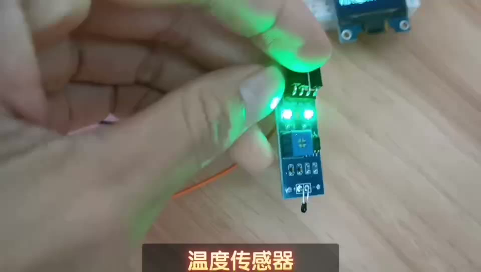

STM32F103C8T6 · Keil MDK · 标准外设库
一句话：温度自动调速 + 旋钮手动调速 + 超温报警的智能降温风扇。 PA0 采温度，主循环按温度分三档决定"转多快"，PA2 输出 PWM 驱动电机， PB0/PB1 用外部中断数旋钮，超过 65℃ 亮红灯并响蜂鸣器。
整个项目只有三类角色。看懂这张图，代码就只剩"翻译"工作了。
图 1 系统框图：两个输入、一个大脑、四个输出



Voltage 的东西，其实都是"温度（0~100℃）"。
名字起错了，但公式 100-(ADValue-1730)/2.1 干的事就是把 1730~1940 的 ADC 值线性拉成 0~100。
把这个概念换过来，代码立刻顺了。
全部引脚都在这张表里，从左到右就是"信号怎么走"。
| 引脚 | 功能 | 接到哪里 / 配置 | 代码位置 |
|---|---|---|---|
PA0 | ADC1_IN0 模拟输入 | 温度传感器 AO（单次转换 + 软件触发 + 上电校准） | AD.c:20 AD.c:25 |
PA2 | TIM2_CH3 复用推挽 | 电机驱动 PWM / ENA 脚（占空比 = 速度） | PWM.c:17 |
PA4 | 推挽输出 | 电机方向 IN1 | Motor.c:16 |
PA5 | 推挽输出 | 电机方向 IN2 | Motor.c:16 |
PA8 | 推挽输出 | 红灯（低电平亮） | Motor.c:16 main.c:37 |
PA9 | 推挽输出 | 绿灯（低电平亮） | Motor.c:16 main.c:38 |
PB0 | 上拉输入 + EXTI0 | 旋钮 A 相（下降沿触发） | Encoder.c:19 |
PB1 | 上拉输入 + EXTI1 | 旋钮 B 相；同时被 Key.c 当成"按键 1" | Encoder.c:19 Key.c:17 |
PB8 | 开漏输出 | OLED SCL（软件 I²C） | OLED.c:5 |
PB9 | 开漏输出 | OLED SDA（软件 I²C） | OLED.c:6 |
PB11 | 上拉输入 | 按键 2（从来不读） | Key.c:17 |
PB12 | 开漏输出 | 蜂鸣器（靠 OLED.c:16 顺手配上的，见第 09 节） | main.c:67 |
PB1 既接旋钮 B 相，又被当成按键——Key_GetNum() 每个循环都会读它，
一旦读到低电平就 Delay_ms(20) 再 while 死等松手（Key.c:35），
转旋钮时主循环会卡住。PA2 既做 PWM 输出，LED.c 里又把它当 LED2（幸运的是 LED_Init() 从来没被调用）。
7 个文件夹里只有 3 个半需要读，其余是"库"，当黑盒用。
| 目录 | 性质 | 内容 | 要读吗 |
|---|---|---|---|
Start\ | ST 官方 | 启动文件 startup_stm32f10x_md.s、stm32f10x.h（63 万字节的寄存器定义）、system_stm32f10x.c（配 72 MHz 时钟） | 不用读 |
Library\ | ST 官方 | 标准外设库：GPIO / TIM / ADC / EXTI / RCC… 全部外设的底层函数 | 查函数时看 |
System\ | 模板 | Delay.c：用 SysTick 做 us / ms 延时 | 扫一眼 |
Hardware\ | 你的驱动 | AD、Motor、PWM、Encoder、Key、LED、OLED、Timer —— 8 个模块 | 必读 |
User\ | 你的逻辑 | main.c（81 行，全部业务逻辑都在这）+ stm32f10x_it.c（中断模板，空的） | 必读 |
Objects\ | 编译产物 | Project.axf（可下载）、.o/.d/.crf、Project.build_log.htm | 不用读 |
Listings\ | 编译产物 | Project.map（内存分布）、启动文件汇编清单 | 查内存时看 |
while(1)，这是整个项目的"剧本"。Encoder_Get() 读一次就清零。d171f5affa45b8fe2b62e1e75b380575.mp4）录的是同一套硬件；
但如果拿视频里的 Speed/Voltage 数值和现在的代码对，会发现对不上——录视频时多半是更早的一版程序。以代码为准。
复位后先跑启动文件，再进 main()，按 main.c:18-23 的顺序初始化 6 个模块。
| 顺序 | 调用 | 占用的资源 | 具体做了什么 |
|---|---|---|---|
| 1 | OLED_Init() | PB8、PB9 （顺带 PB12） | 把 PB8/PB9 配成开漏输出，发 SSD1306 初始化命令。注意 OLED.c:16 写的是 Pin_8|Pin_12，把蜂鸣器脚也配了。 |
| 2 | Motor_Init() | PA4/PA5/PA8/PA9 | 方向脚 + 两个灯配成推挽输出；末尾调用 PWM_Init()。 |
| 2.1 | PWM_Init() | TIM2 + PA2 | ARR=99，PSC=35 → 20 kHz、100 级分辨率的 PWM，开 CH3。 |
| 3 | Key_Init() | PB1、PB11 | 上拉输入。PB1 和旋钮 B 相撞了。 |
| 4 | Encoder_Init() | PB0/PB1 + EXTI0/1 | 两相下拉输入、下降沿中断、NVIC 分组 2，抢占优先级 1。 |
| 5 | Timer_Init() | TIM2（又是它） | ARR=9，PSC=71 → 1 kHz 更新中断。这一步把第 2.1 步的 PWM 时基覆盖掉了。 |
| 6 | AD_Init() | PA0 + ADC1 | ADCCLK=12 MHz，单次、非扫描、右对齐，执行 RSTCAL → CAL 校准。 |
TIM_TimeBaseInit(TIM2, …) 会直接重写 ARR 和 PSC。
PWM 的周期从 99 变成 9，也就是占空比只剩 0~9 共 10 个等级；
只要速度 ≥ 10，CCR 就大于 ARR，输出恒为高 → 实际是 100% 满速；
PWM 频率也从 20 kHz 变成 100 kHz（多数驱动模块跟不上）。详见第 09 节第 1 条。
这 30 行是整个项目的全部"大脑"。看懂这张图，项目就通了八成。
图 2 主循环流程：一次循环约几毫秒，然后回到 ①
while (1) // main.c:28
{
ADValue = AD_GetValue(); // main.c:30 采样一次 PA0（阻塞等 EOC）
Voltage = 100-((ADValue-1730)/2.1); // main.c:31 ADC → 温度 0~100
KeyNum = Key_GetNum(); // main.c:32 没用，还会卡主循环
if(Voltage>25){ // main.c:33 自动档
if(Voltage>65){ // main.c:34 超温报警
flag=1; // 打开蜂鸣器
PA8=低(红灯亮); PA9=高; // main.c:37-38
}
if(55<Voltage<65) 两灯都灭; // main.c:40 预警带
if(Voltage<55){ flag=0; 红灯灭; 绿灯亮; } // main.c:41-46
Speed=Voltage; // main.c:47 温度直接当速度
if(Voltage>=100) Speed=99; // main.c:48 边界
}
if(Voltage<=25 && Voltage>=20) Speed=0; // main.c:50 死区
if(Voltage<20) Speed += 4*Encoder_Get(); // main.c:51-53 手动档
if(Speed>=100 || Speed<=-100) Speed=0; // main.c:54 限幅
Motor_SetSpeed(Speed); // main.c:55
OLED_ShowSignedNum(2,7,Speed,3); // main.c:56
OLED_ShowNum(3,9,Voltage,3); // main.c:57 小数被截断
}>25 / 20~25 / <20 三段互不重叠，所以结果正确；
但读的时候容易误以为会同时执行。如果改成 if / else if / else，可读性和执行效率都会更好。
模式切换只由一个变量决定：温度 T。这就是一个最简单的"状态机"。
图 3 模式状态机：三档互斥，报警是自动档里的子状态
| 温度 T | 电机 | 红灯 PA8 | 绿灯 PA9 | 蜂鸣器 |
|---|---|---|---|---|
| T < 20℃ | 旋钮手动调速 | 灭（高） | 亮（低） | 静音 |
| 20 ≤ T ≤ 25℃ | 停转（速度 0） | 灭（高） | 亮（低） | 静音 |
| 25 < T ≤ 55℃ | 速度 = T | 灭（高） | 亮（低） | 静音 |
| 55 < T ≤ 65℃ | 速度 = T | 灭（高） | 灭（高） | 静音 |
| T > 65℃ | 速度 = T（但受 PWM 坑影响） | 亮（低） | 灭（高） | 响 |
GPIO_ResetBits 才是亮）。
唯独 55~65℃ 这一段"两个都置高"，所以看起来是"两个都灭"——这是作者的刻意设计（预警=无灯），不是笔误。
一共 3 个中断：两个数旋钮，一个发蜂鸣器方波。中断里千万不能放延时和死循环。
// Encoder.c:82-98 PB0 下降沿
void EXTI0_IRQHandler(void)
{
if(EXTI_GetITStatus(EXTI_Line0)==SET){
if(PB0==0 && PB1==0) // 看另一相判断方向
Encoder_Count--; // 反转
EXTI_ClearITPendingBit(EXTI_Line0);
}
}PB1 下降沿则 Encoder_Count++（Encoder.c:108-124）。
主循环用 Encoder_Get() 取走增量并清零，所以叫"增量"而不是"位置"。
// main.c:60-81 1 kHz 进一次
void TIM2_IRQHandler(void)
{
i++;
if(flag==1){
TIM_SetAutoreload(TIM2,190); // 改频率=改音调
if(i%2==0) PB12=1; else PB12=0; // 方波
}
if(flag==0){ PB12=1; 还原两个灯; }
TIM_ClearITPendingBit(TIM2, TIM_IT_Update);
}靠"每进一次中断翻转一次引脚"造方波： 72 MHz ÷ 72 ÷ 191 ÷ 2 ≈ 2.6 kHz，人耳听得到的高音。
main.c:66 里的 TIM_SetAutoreload(TIM2,190) 改的是同一个 ARR，
所以每次报警，PWM 的周期和占空比都会被顺手改掉，而且 flag 回到 0 时没有还原 ARR。
所有模块其实都在为这一条链路服务：
温度
│ PA0 上的模拟电压
▼
ADC1 单次转换 ──► ADValue = 1730 ~ 1940 ……(12 位，0~4095)
│ AD.c:52 AD_GetValue()
▼
线性映射 ──► T = 100 − (ADValue − 1730) / 2.1 ……(0~100℃)
│ main.c:31
▼
三档决策 ──► Speed = T 或 0 或 Speed ± 4×旋钮增量 ……(−100 ~ +100)
│ main.c:33-54
▼
Motor_SetSpeed(Speed)
│ Motor.c:28
├─ Speed ≥ 0：PA4=1、PA5=0（正转），CCR = Speed
└─ Speed < 0：PA4=0、PA5=1（反转），CCR = −Speed
▼
PWM_SetCompare3(CCR) ──► TIM2->CCR3
│ PWM.c:56
▼
PA2 上的方波 ──► 电机驱动 ──► 风扇转速而 LCD 那条支路最简单：OLED_ShowSignedNum(2,7,Speed,3) 显示速度（带符号、3 位），
OLED_ShowNum(3,9,Voltage,3) 显示温度（float 隐式转 int，小数直接丢掉，而且 T 为负时会显示成一个很大的数）。
"代码看着都对，但现象不对劲"——原因基本都在这里。前三条是真的会影响功能。
现象速度显示 20、50、90，风扇转速看起来几乎一样快，旋钮低速区才有一点变化。
原因Motor_Init() 里 PWM_Init() 先设 ARR=99, PSC=35（PWM.c:29-30），
紧接着 Timer_Init() 又把 同一个 TIM2 设成 ARR=9, PSC=71（Timer.c:20-21）。
后果占空比公式变成 CCR/(ARR+1) = CCR/10：只要 CCR ≥ 10 就是恒高电平（100%），
PWM 频率也从 20 kHz 变成 100 kHz。
改法蜂鸣器换一个定时器（TIM3 或 TIM4），TIM2 只留给 PWM。
原因main.c:66 的 TIM_SetAutoreload(TIM2,190) 改的就是 PWM 的周期寄存器，
flag 变回 0 时没有任何地方把它改回 9。
后果报过一次警之后，占空比永久变成 CCR/191（99 只能得到 52%），
中断频率也从 1 kHz 变成 5.2 kHz——电机明显变弱，蜂鸣器音调也跟着变。
改法同第 1 条；若一定要改 ARR，要在 flag==0 分支里改回去。
原因Key.c:17 把 PB1 当按键，Key_GetNum() 在 main.c:32 每圈都调用；
读到低电平就 Delay_ms(20)，然后 while(PB1==0);（Key.c:35）死等。
后果转旋钮时主循环被卡住几十毫秒，OLED 闪烁、调速发滞； 如果旋钮正好停在 B 相为低的位置，程序会永远卡在那里，电机保持上一次的速度。
改法删掉 main.c:32 这一行和 Key 模块（项目根本没用按键）。
LED_Init() 把 PA1、PA2 配成推挽输出（LED.c:16），可 PA2 是 PWM 输出脚。
好在 LED_Init() 从没被调用，所以没炸。真正的红绿灯是在 Motor.c:16 里顺手初始化的 PA8/PA9。
建议把 LED.c/LED.h 移出工程，或者改成 PA8/PA9 并统一"低电平亮"。
全工程没有任何地方把 PB12 配成输出。它能响，纯粹因为 OLED.c:16 写成了
GPIO_Pin_8|GPIO_Pin_12（多写了个 12），把它配成了开漏输出。
风险谁"顺手清理"一下 OLED.c 这行，蜂鸣器立刻不响，而且查半天查不出来。
建议在蜂鸣器自己的模块里明确初始化 PB12，OLED.c 改回 Pin_8。
Voltage、AD_Init、"温度变量"三个叫法混在一起，OLED 上还写着 Voltage:。
实际它是 0~100℃ 的温度。改名叫 Temperature 并同步改 OLED 文字，代码可读性立刻上一个台阶。
int8_t 的范围是 −128~127，Speed += 4*Encoder_Get()（main.c:52）
在快速拧旋钮时可能直接溢出变成反号。另外 if(Speed>=100||Speed<=-100) Speed=0;
是"清零"而不是"限幅"，拧过头会突然从满速跳到停转，手感很怪。
改法用 int16_t，并改成真正的限幅。
ADValue 小于 1730 时 T 会大于 100，大于 1940 时 T 变负数。
OLED_ShowNum 的参数是 uint32_t，负的 float 转过去会变成一个巨大的数。
改法if(T>100) T=100; if(T<0) T=0;，顺便加个 ADC 多次平均。
按这个顺序改，每一步都能独立验证，不会一次改崩。
Timer.c 里 5 处 TIM2 → TIM3（第 11、14、23、42、49 行），
第 42 行的通道改成 TIM3_IRQn；main.c 的中断函数改名为 TIM3_IRQHandler，函数体里的 TIM2 一并替换。
main.c:32 的 KeyNum = Key_GetNum();（可连同 Key_Init() 一起删）。PB1 从此只属于编码器。
int16_t Temperature, Speed; // 不再用 float 和 int8_t
ADValue = AD_GetValue();
Temperature = 100 - (int16_t)((ADValue - 1730) / 2.1f);
if (Temperature > 100) Temperature = 100; // 限幅，别让负温度跑出去
if (Temperature < 0) Temperature = 0;
// 原来的 "超过就清零" 换成真正的限幅
if (Speed > 100) Speed = 100;
if (Speed < -100) Speed = -100;Motor_SetSpeed 的参数也改成 int16_t，避免调用处隐式截断。
LED.c；OLED.c:16 改回 GPIO_Pin_8；
在 main 里显式把 PB12 配成推挽输出。
uint32_t sum = 0;
for (uint8_t n = 0; n < 8; n++) sum += AD_GetValue();
ADValue = sum / 8;main 里的三档判断抽成 Motor_Task(void)，
主循环只剩三行：采样、决策、显示。这样"流程"才真的清晰。
| 项 | 值 |
|---|---|
| 芯片 | STM32F103C8（中容量，64 KB Flash / 20 KB RAM） |
| 工程文件 | Project.uvprojx（双击用 Keil MDK 打开） |
| 宏定义 | 工程里只写了 USE_STDPERIPH_DRIVER，没有 STM32F10X_MD。
它能编过是靠 Keil 装的 Keil.STM32F1xx_DFP.2.4.1 器件包（编译日志末尾那行 Software Packages used 就是它）。
换一台没装这个包的电脑，可能会报 TIM2_IRQn 未定义 —— 那时在
Options → C/C++ → Define 里补成 USE_STDPERIPH_DRIVER,STM32F10X_MD 即可。 |
| 头文件路径 | .\Start; .\Library; .\User; .\System; .\Hardware |
| 上次编译结果 | Code 6532 B、RO 1788 B、RW 20 B、ZI 1636 B，0 Error 0 Warning |
| HEX 输出 | 没开（CreateHexFile=0），只有 Objects\Project.axf |
下载流程：
F7 编译 → F8 下载 → 复位运行。.hex：Options → Output → 勾选 Create HEX File 后重新编译。Objects\Project.axf 是 ELF，可以用 ST-Link Utility / STM32CubeProgrammer 直接下载 .axf；
或者先按上面第 4 步生成 .hex，再用任意下载工具烧。
如果老师追问"为什么要死区"：因为温度在 20℃ 附近抖动时，自动档和手动档会来回切换， 死区就是给这个临界点加的一段缓冲，避免转速突然跳变。